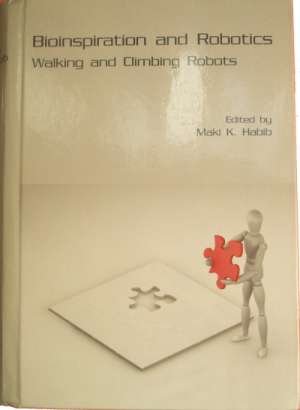
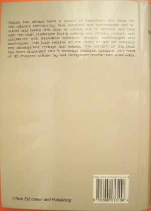

|
P16: ”Locomotion Principles of 1D Topology Pitch and Pitch-Yaw-Connecting Modular Robots” |
|
 |
 |
Book: “Bioinspiration and Robotics: Walking and Climbing Robots” Edited by Maki K. Habib, from Saga University, Japan Publised by Advanced Robotic Systems International and I-Tech Education and Publishing. Vienna. Austria. ISBN: 978-3-902613-15-8 Contents size: 30 Chapters, 544 pages Chapter 24: “Locomotion Principles of 1D Topology Pitch and Pitch-Yaw Connecting Modular Robot”. pp.403-428 |
J. Gonzalez-Gomez, Houxiang Zhang and Eduardo Boemo, Locomotion Principles of 1D Topology Pitch and Pitch-Yaw-Connecting Modular Robots. Chapter 24 of the Book: Bioinspiration and Robotics: Walking and Climbing Robots. pp.403-428. Published by Advanced Robotics Systems International and I-Tech Education and Publishing. Vienna, Austria. September 2007. ISBN 978-3-902613-15-8.
The last few years have witnessed an increasing interest in modular reconfigurable robotics technologies. The applications include industrial inspection, urban search and rescue, space applications and military reconnaissance. They are also very interesting for research purposes. New configurations can be built very fast and easily, for the exploration, testing and analysis of new ideas.
Modular robots can be classified according to both the connection between the modules and the topology of its structure. One important group is the Snake robots. It includes the configurations consisting of one chain of modules (1D Topology). The locomotion is performed by means of body motions. Depending on the type of connection between the modules, there are pitch, yaw and pitch-yaw connecting snakes robots. Many researchers have studied the locomotion capabilities of the yaw family. There are also research works about different kind of gaits for specific pitch-yaw modular robots. However, the locomotion principles for the whole family are not well understood.
In this chapter we propose a model for the locomotion of the pitch-yaw snake robots that allow them to perform five different gaits: forward and backward, side-winding, rotating, rolling and turning. Each joint is controlled by means of a sinusoidal oscillator with four parameters: amplitude, frequency, phase and offset. The values of these parameters and the relations between them (locomotion principles) determine the type of gait performed and its trajectory and velocity.
Another issue is the minimal configurations that can move both in 1D and in 2D. Experiments show that configurations consisting on two and three modules can move in 1D and 2D respectively. The locomotion principles of these two minimal configurations are studied and then applied to modular robots with n modules.
Experiments on real modular robots have been carried out. Four prototypes have been built: The two minimal configurations and two eight-modules snakes, with both pitch and pitch-yaw connections. The successful experiments confirm the locomotion principles. In addition, it has been shown that this model can be applied for implementing locomotion capabilities on real snake robots.
|
Files for downloading |
|
cwr-chap24-Gonzalez_et_al.pdf (4.6MB) |
Chapter 24 in PDF format |
|
cwr-chap24-Gonzalez-et-al.odt (6.5MB) |
Chapter 24 in OpenDocument Format (ODF, ISO/IEC 26300). |
|
chap24-figures.zip (4.4MB) |
Chapter 24: Figure sources: SVG, PNG, Blender and octave/Mathlab formats |
|
portada.png (2.6MB) |
Picture of the Cover of the book. Resolution 1164x1588 |
|
trasera.png (1.9MB) |
Picture of the Back of the Book. Resolution: 1032x1444 |
{kind=link}
{kind=link}